The residual/error term \(\epsilon_i\) gives us the difference between the actual value of the outcome variable for a given observation and the value predicted by the model.
Lets use algebra to rewrite this equation with \(y_i\) on the left-hand side:
\[y_i=\hat{y}_i+\epsilon_i\]
If we plug in our linear model formula for \(\hat{y}_i\), we can get the full model formula:
The structural part is the predicted value from our model which is typically a linear function of the independent variables.
The stochastic component is the leftover residual or error component, that is not accounted for by the model.
Depending on disciplinary norms, there are different conceptual ways to view this basic relationship:
Description: observed = summary + residual
Prediction: observed = predicted + error
Causation: observed = true process + disturbance
Calculating marginal effects
The marginal effect of \(x\) on \(y\) is simply the predicted change in \(y\) for a one unit increase in \(x\) from its current value, holding all else constant.
In a basic linear model, the marginal effect is just given by the slope itself.
Technically, the marginal effect is the derivative of \(y\) with respect to a given \(x\). This gives us the tangent line for the curve at any value of \(x\).
The marginal effect for number of sports played is:
\[0.49-0.09(male_i)\]
The marginal effect for gender is:
\[-0.54-0.09(nsports_i)\]
Marginal effects plot
nsports <-0:6gender_diff <--0.54-0.09*nsportsggplot(tibble(nsports, gender_diff),aes(x=nsports, y=gender_diff))+geom_line()+labs(x="number of sports played",y="predicted popularity difference between boys and girls")
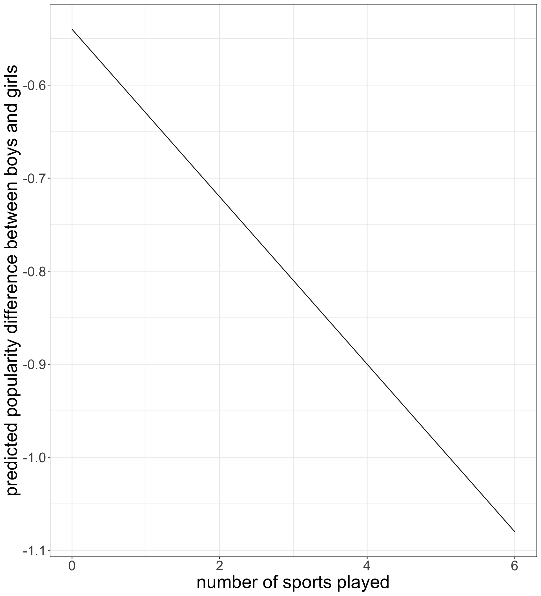
Figure 1: Marginal effect of gender difference on popularity by sports played
Two key assumptions of linear models
Linearity
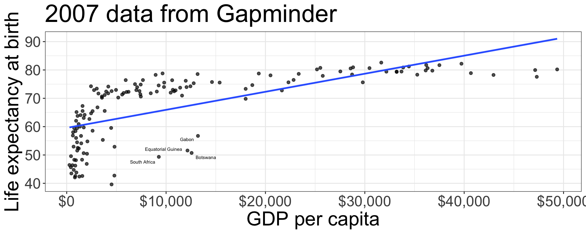
If you fit a model with the wrong functional form, it is considered a specification error.
We can correct this through a variety of more advanced model specifications.
Error terms are iid
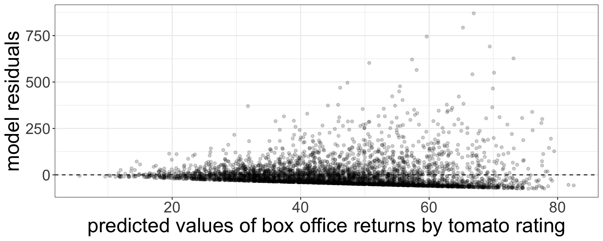
iid = independent and identically distributed which is typically violated either by heteroscedasticity or autocorrelation.
The consequence of violating the i.i.d. assumption is usually incorrect standard errors.
How are linear model parameters estimated?
⚠️ Heavy math ahead!
We have simple formulas for the slope and intercept for a bivariat model.
With multiple independent variables, a simple formula will not suffice. To estimate model parameters with multiple independent variables we need to use some matrix algebra.
The matrix algebra approach to linear models
We can use matrix algebra to represent our linear regression model equation using one-dimensional vectors and two-dimensional matrices.
\[\mathbf{y}=\mathbf{X\beta+\epsilon}\]
\(\mathbf{y}\) is a vector of known values of the independent variable of length \(n\).
\(\mathbf{X}\) is a matrix of known values of the independent variables of dimensions \(n\) by \(p+1\).
\(\mathbf{\beta}\) is a vector of to-be-estimated values of intercepts and slopes of length \(p+1\).
\(\mathbf{\epsilon}\) is a vector of residuals of length \(n\) that will be equal to \(\mathbf{y-X\beta}\).
Our goal is to choose a \(\mathbf{\beta}\) vector that minimizes the sum of squared residuals, \(SSR\), which is just given by the \(\epsilon\) vector squared and summed up. We can rewrite the matrix algebra formula to isolate \(e\) on one side:
#set up the design matrixX <-as.matrix(cbind(rep(1, nrow(movies)), movies[,c("runtime","box_office")]))#the outcome variable vectory <- movies$metascore#crossprod(X) will do matrix multiplication, solve will invertbeta <-solve(crossprod(X))%*%crossprod(X,y)beta
If we treat \(\sigma^2\) as the variance of the error term \(\epsilon\), then we can also use matrix algebra to calculate the covariance matrix:
\[\sigma^{2}(\mathbf{X'X})^{-1}\]
The values of this matrix give us information about the correlation between different independent variables. Most importantly, the square root of the diagonal values of this matrix are the standard errors for the estimated values of \(\beta\).
In practice, we don’t have \(\sigma^2\), but we can estimate from the fitted values of \(y\) by:
\[s^2=\frac{\sum(y_i-\hat{y}_i)^2}{n-p-1}\] We can then use these estimated standard errors to calculate t-statistics and p-values, confidence intervals, and so on.
Figure 2: The relationship between life expectancy and GDP per capita is clearly not a straight line!
Non-linearity can be hard to detect
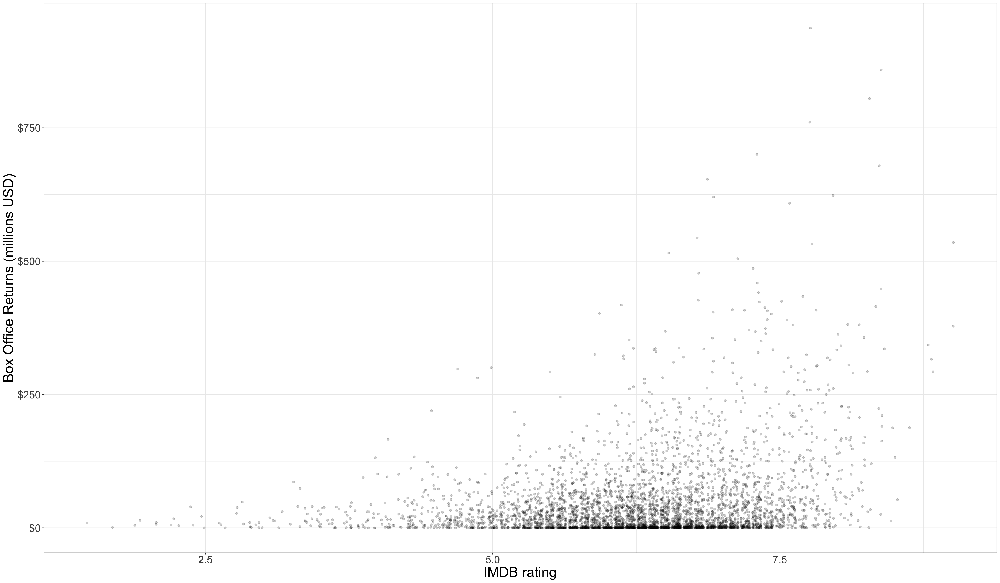
Figure 3: Is this relationship non-linear?
Two techniques for detecting non-linearity
Non-linear smoothing
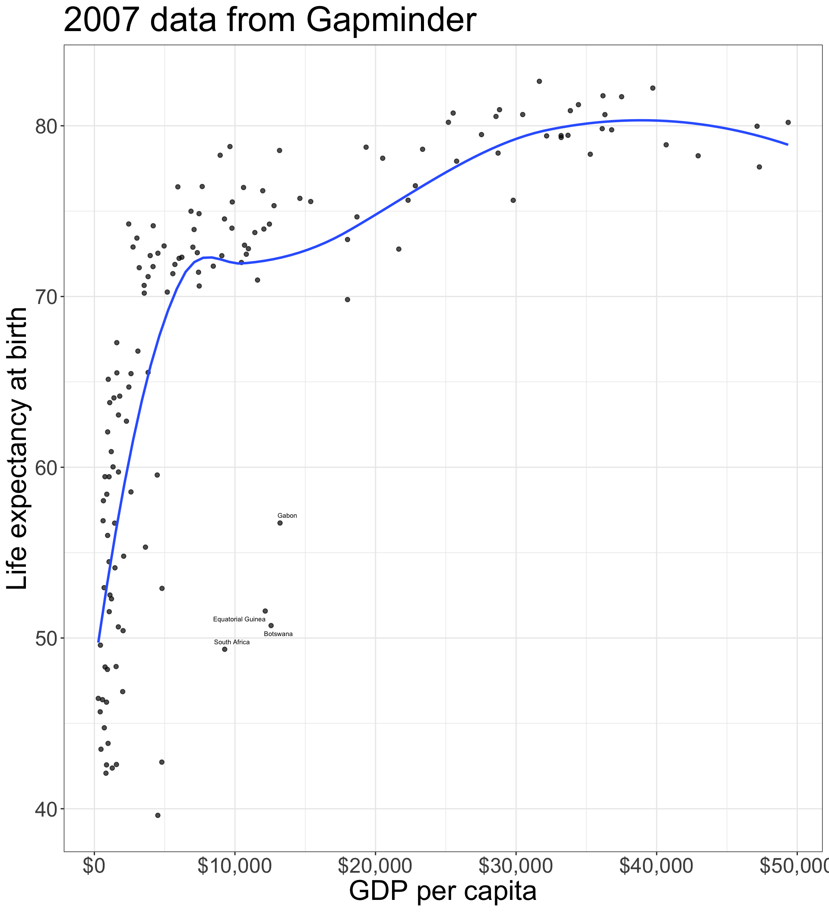
Diagnostic residual plot
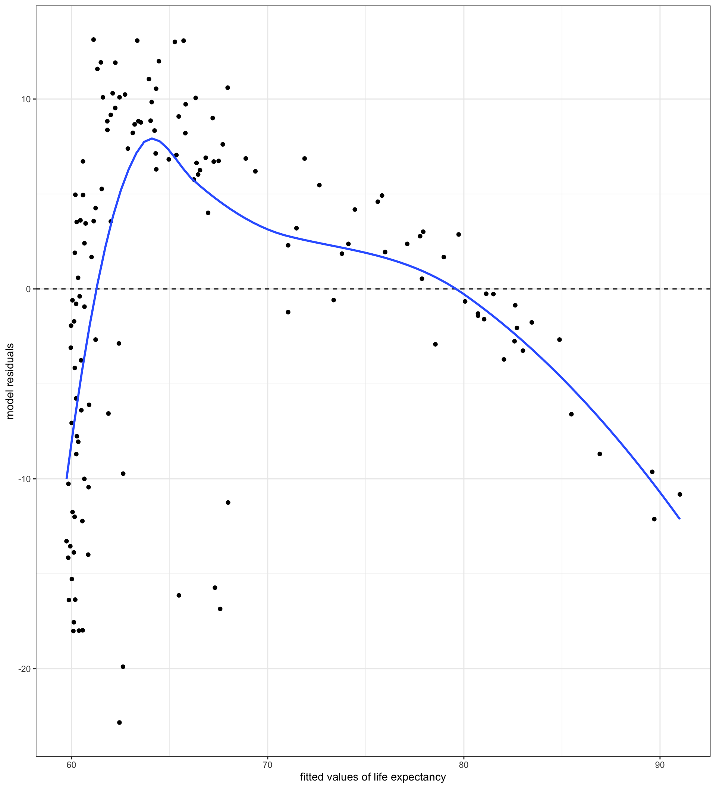
Non-linear smoothing
A smoothing function uses the values of the \(y\) for the closest neighbors for a given observation of \(x\) to calculate a smoothed value of \(y\) that will reduce extreme values.
Smoothing functions vary by
What function is used to calculate the smoothed values (e.g. mean, median)
The span of how many neighbors are considered. Larger spans will lead to smoother lines.
Median smoothing box office returns for Rush Hour 3
Rush Hour 3 Poster
Table 1: Calculating smoothed box office returns for Rush Hour 3 with two neighbors either way.
Title
IMDB Rating
Box Office (millions)
Smoothed Box Office (median)
Nobel Son
6.2
$0.5
-
Resident Evil: Extinction
6.2
$50.6
-
Rush Hour 3
6.2
$140.1
$50.6
Spider-Man 3
6.2
$336.5
-
The Last Mimzy
6.2
$21.5
-
Applying a median smoother
Figure 4: Different median smoothers over scatterplot movie box office returns by IMDB rating
The LOESS smoother
LOcally Estimated Scatterplot Smoothing
Each smoothed value is determined from a model that includes:
polynomial terms (more on that later)
weighting of observations by distance from focal point
LOESS does very nice smoothing but is computationally expensive
Because of the weighting, LOESS can and does take a very large span of data for each focal point
Figure 5: Use LOESS smoothing for nice smooth lines
Adjusting span
ggplot(subset(gapminder, year==2007), aes(x=gdpPercap, y=lifeExp))+geom_point(alpha=0.7)+geom_smooth(method="loess", span=1, se=FALSE, color="green")+geom_smooth(method="loess", span=0.75, se=FALSE, color="red")+geom_smooth(method="loess", span=0.25, se=FALSE, color="blue")+labs(x="GDP per capita", y="Life expectancy at birth")+scale_x_continuous(labels=scales::dollar)
The default span is 0.75 which is 75% of observations.
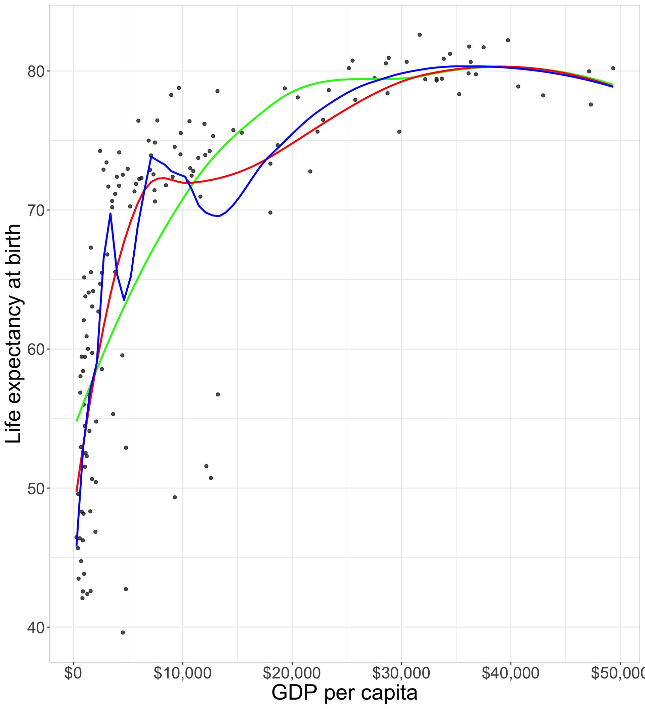
⚠️ LOESS with large n will 💀 your 💻
Use a GAM instead
Generalized Additive Models (GAM) are another way to create non-linear smoothing that is less computational intensive that LOESS but with similar results.
ggplot(subset(gapminder, year==2007), aes(x=gdpPercap, y=lifeExp))+geom_point(alpha=0.7)+geom_smooth(method="loess",se=FALSE, color="blue")+geom_smooth(method="gam",se=FALSE, color="red")+labs(x="GDP per capita", y="Life expectancy at birth")+scale_x_continuous(labels=scales::dollar)
For datasets over 1000 observations, geom_smooth will use GAM and otherwise defaults to LOESS.
Don’t forget you can also specify a linear fit with method="lm".
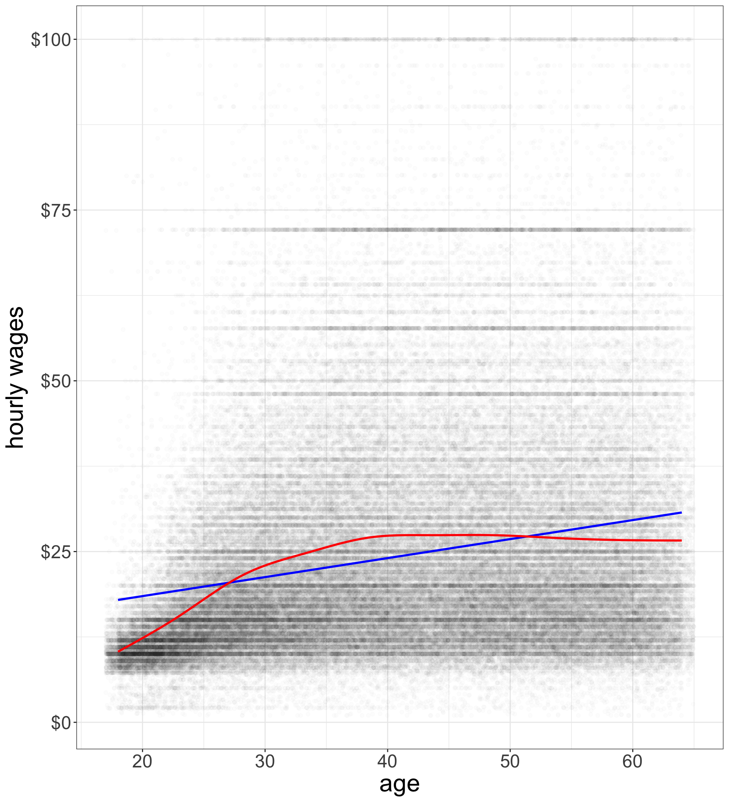
Residual plots
A scatterplot of the residuals vs. the fitted values from a model can also be useful for detecting non-linearity.
If the relationship is linear, then we should expect to see no sign of a relationship in this plot. Drawing a smoothed line can be useful for this diagnosis.
Residual plots can also help to detect heteroskedasticity which we will talk about later.
Figure 6: Residual plots can be used for multiple diagnostic purposes
ggplot(augment(model), aes(x=.fitted, y=.resid))+geom_point()+geom_hline(yintercept =0, linetype=2)+geom_smooth(se=FALSE)+labs(x="fitted values of life expectancy", y="model residuals")
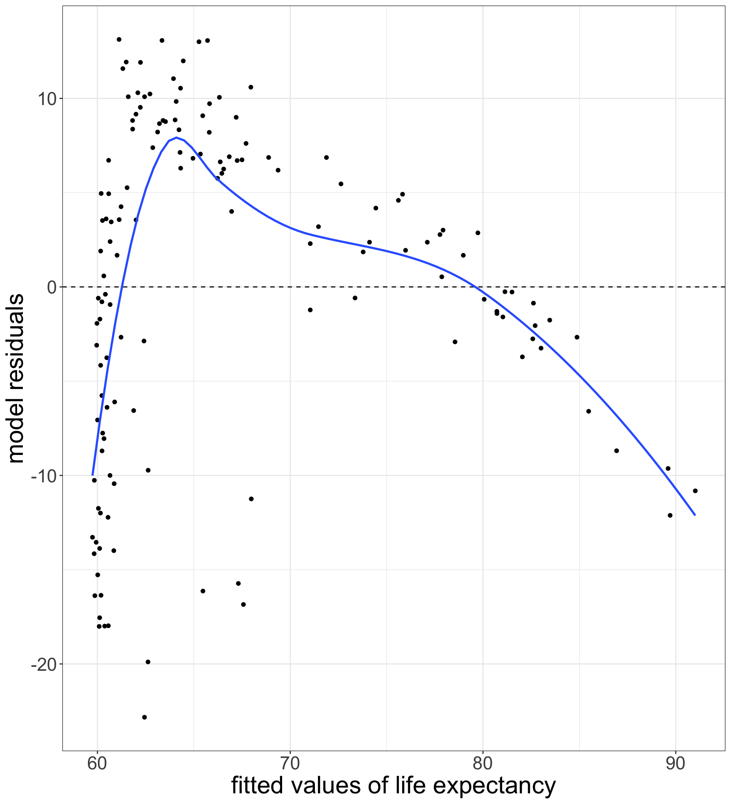
Its non-linear, so now what?
Transform variables
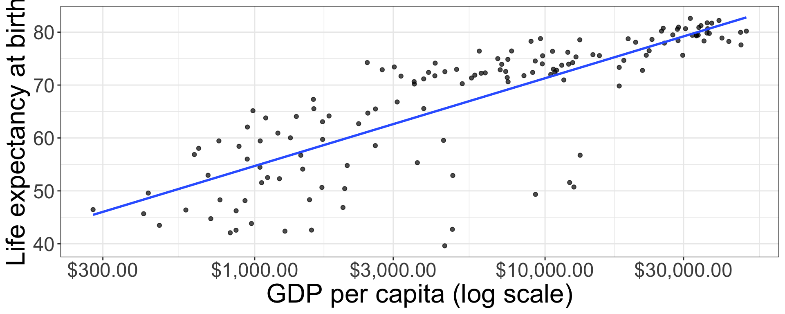
Polynomial terms
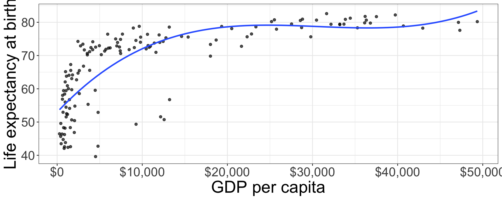
Create splines
Transforming variables
A transformation is a mathematical function that changes the value of a quantitative variable. There are many transformations that one could apply, but we will focus on one - the log transformation. This is the most common transformation used in the social sciences.
Transformations are popular because they can solve multiple problems:
A transformation can make a non-linear relationship look linear.
A transformation can make a skewed distribution more symmetric.
A transformation can reduce the impact of extreme outliers.
Plotting the log transformation
ggplot(subset(gapminder, year==2007), aes(x=gdpPercap, y=lifeExp))+geom_point(alpha=0.7)+geom_smooth(method="lm", se=FALSE)+scale_x_log10(labels=scales::dollar)+#<<labs(x="GDP per capita (log scale)", y="Life expectancy at birth")
The scale of the independent variable is now multiplicative
The relationship looks more linear now, but what does it mean?
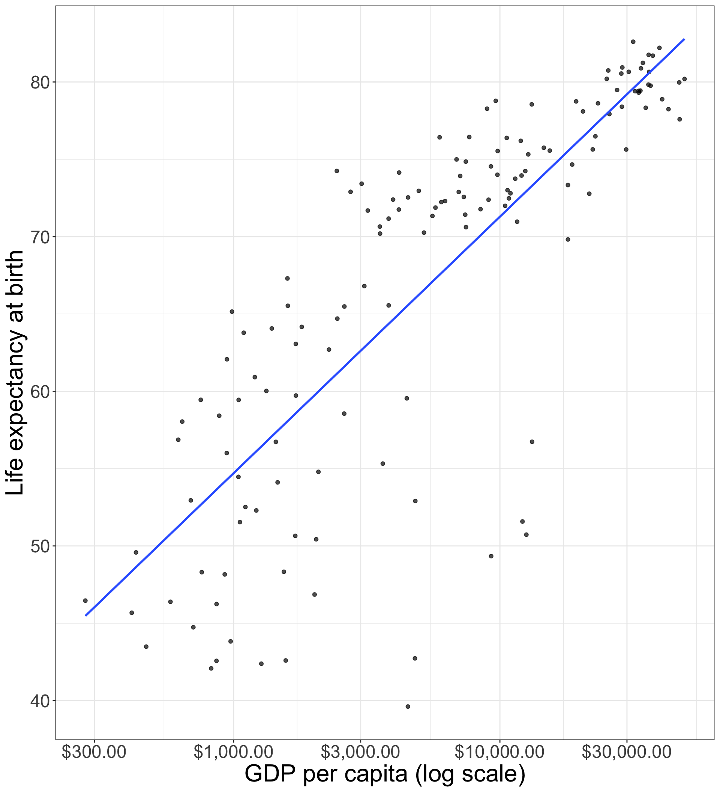
The natural log
Although ggplot uses log with a base 10, we usually use the natural log transformation in practice. Both transformations have the same effect on the relationship, but the natural log provides results that are easier to interpret.
In R, it is easy to take the natural log of a number by just using the log command. Any positive number can be logged.
log(5)
[1] 1.609438
The natural log of 5 is 1.609, but what does this mean?
The natural log of any number is the power that you would have to raise the constant \(e\) to in order to get the original number back. In R, we can calculate \(e^x\) with exp(x):
exp(log(5))
[1] 5
logs make multiplicative relationships additive
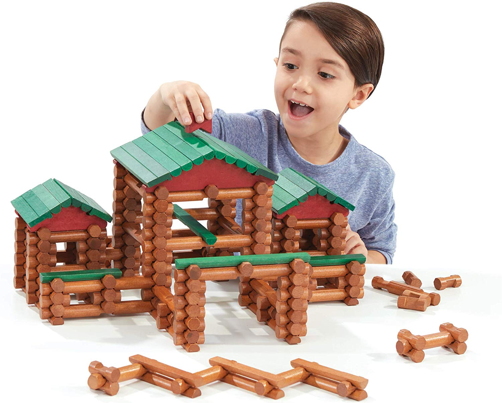
The key feature of the log transformation is that it makes multiplicative relationships additive.
\[log(x*y)=log(x)+log(y)\]
log(5*4)
[1] 2.995732
log(5)+log(4)
[1] 2.995732
We can use this feature to model relative (percent) change rather than absolute change in our models.
Logging box office returns gives us a linear fit
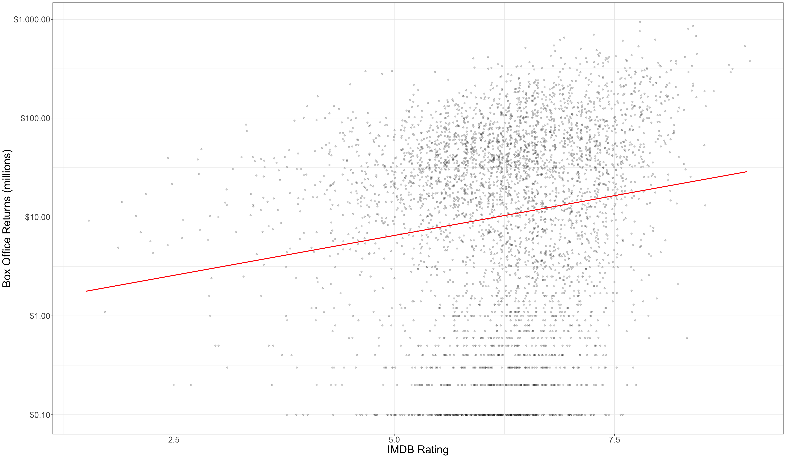
Figure 7: Note the logarithmic scale on the y-axis
What does it mean for the model?
To fit the model, we can just use the log transformation directly in the formula of our lm command:
model <-lm(log(box_office)~rating_imdb, data=movies)coef(model)
(Intercept) rating_imdb
0.01557736 0.37140161
\[\log(\hat{returns}_i)=0.016+0.371(rating_i)\]
How do we interpret the slope?
A one point increase in IMDB rating is associated with a 0.371 increase in … the log of box office returns? 😕
Converting to the original scale
To get back to the original scale of box office returns for the dependent variable, we need to exponentiate both side side of the regression equation by \(e\):
On the left hand side, I will get back predicted box office returns by the definition of logs. On the right hand side, I can apply some of the mathematical properties of logarithms and powers.
For each one unit increase in the independent variable, you multiply the previous predicted value by 1.449 to get the new predicted value. Therefore the predicted value increases by 44.9%.
The model predicts that movies with a zero IMDB rating make 1.02 million dollars, on average. Every one point increase in the IMDB rating is associated with a 44.9% increase in box office returns, on average.
General form and interpretation
\[\log(\hat{y}_i)=b_0+b_1(x_i)\]
You must apply the exp command to your intercept and slopes in order to interpret them.
The model predicts that the mean of \(y\) when \(x\) is zero will be \(e^{b_0}\).
The model predicts that each one unit increase in \(x\) is associated with a multiplicative change of \(e^{b_1}\) in \(y\). It is often easiest to express this in percentage terms.
An absolute change in \(x\) is associated with a relative change in \(y\).
\(e^{3.28}=26.58\): PG-rated movies make 26.58 million dollars on average.
\(e^{0.75}=2.12\): G-rated movies make 112% more than PG-rated movies, on average.
\(e^{-0.27}=0.76\): PG-13 rated movies make 76% as much as (or 24% less than) PG-rated movies, on average.
\(e^{-1.79}=0.17\): R-rated movies make 17% as much as (or 83% less than) PG-rated movies, on average.
Approximating small effects
When \(x\) is small (say \(x<0.2\)), then \(e^x\approx1+x\).
We can use this fact to roughly approximate coefficients/slopes as percent change when they are small.
model <-lm(log(box_office)~runtime, data=movies)coef(model)
(Intercept) runtime
-1.7528129 0.0383472
exp(coef(model))
(Intercept) runtime
0.1732858 1.0390919
If we do the full exponentiating, we can see that a one minute increase in runtime is associated with a 3.9% increase in box office returns.
The actual percentage increase is very close to what we got for the slope of the non-exponentiated slope (0.038). So, you can often get a ballpark estimate without having to exponentiate.
Logging the independent variable
Lets return to the relationship between GDP per capita and life expectancy that fit well as a linear relationship when we logged GDP per capita. Lets run the model:
model <-lm(lifeExp~log(gdpPercap), data=subset(gapminder, year==2007))round(coef(model), 5)
(Intercept) log(gdpPercap)
4.94961 7.20280
How do we interpret these results? This case requires something different than the case where we logged the dependent variable.
Our basic model for life expectancy by GDP per capita is:
\[\hat{y}_i=4.9+7.2\log{x_i}\] What is the predicted value of life expectancy at $1 GDP?
\[\hat{y}_i=4.9+7.2\log{1} = 4.9+7.2 * 0=4.9\]
What happens when we increase GDP per capita by 1% (from 1 to 1.01)?
A one percent increase in \(x\) is associated with a \(b_1/100\) unit change in \(y\), on average.
A relative change in \(x\) is associated with an absolute change in \(y\).
\(exp(b_0)\) gives the predicted value of \(y\) when \(x\) equals one.
Keep in mind that the \(log(0)\) is negative infinity so you cannot predict the value of \(y\) when \(x=0\).
Logging both variables
Figure 8: Logging both variables can sometimes solve multiple problems
The elasticity model
model <-lm(log(wages)~log(age), data=earnings)coef(model)
(Intercept) log(age)
1.1558386 0.5055849
This is actually the easiest model to interpret. We can interpret the slope directly as the percent change in \(y\) for a one percent increase in \(x\).
Calculating the percent change in one variable by percent change in another is what economists call an elasticity so this model is often called an elasticity model.
The model predicts that a one percent increase in age is associated with a 0.51% increase in wages, on average.
A cheat sheet
Which variable logged
Non-linear shape
Change in x
Change in y
Interpret \(\beta_1\)
Independent variable
diminishing returns
relative
absolute
\(\beta_1/100\)
Dependent variable
exponential
absolute
relative
\(e^{\beta_1}\)
Both variables
both types
relative
relative
\(\beta_1\)
When \(x<=0\), logging is bad
Log problems
\[log(0)=-\infty\]\[log(x)\text{ is undefined when }x<0\]
Try the square/cube root
The square root transformation has a similar effect to the log transformation but can include zero values.
The cube root transformation can also include negative values.
The downside of square/cube root transformations is that values are not easy to interpret.
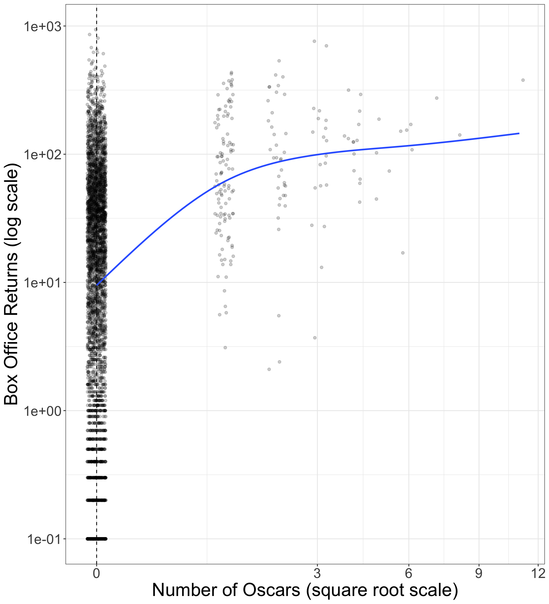
Polynomial models
Polynomial expression
A polynomial expression is one that adds together terms involving multiple powers of a single variable.
if we include a squared value of \(x\) we get the classic formula for a parabola:
\[y=a+bx+cx^2\]
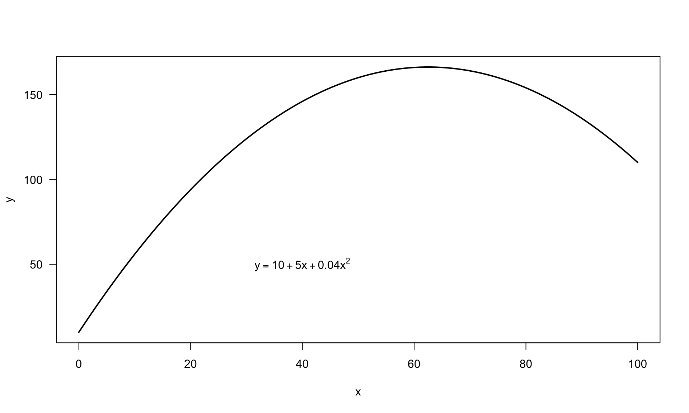
A polynomial model
We can fit such a parabola in a linear model by including a new variable that is simply the square of the original variable:
\[\hat{y}_i=\beta_0+\beta_1x_i+\beta_2x_i^2\]
model <-lm(wages~I(age-40)+I((age-40)^2), data=earnings)coef(model)
So, for our case, the marginal effect of age on wages is given by:
\[0.3171+2*-0.0178(x-40)=0.3171-0.0356(x-40)\]
At age 40 (the zero value), a one year increase in age is associated with a salary increase of $0.32, on average.
For every year over 40, this increase is smaller by $0.0356. For every age younger than 40, this increase is larger by $0.0356.
Finding the inflection point
If the effect of age on wages goes down by $0.0356 for every year over 40, then at some point the positive effect of age on wages will become negative.
We can figure out the value of age at this inflection point by setting the effect to zero and solving for x. In general, this will give us:
\[\beta_1/(-2*\beta_2)\]
In our case, we get:
\[0.3171/(-2*-0.0178)=8.91\]
So the model predicts that the effect of age on wages will shift from positive to negative at age 48.91.
Figure 9: Spline models create hinges or “broken arrows”
The basic idea of a spline model is to allow the slope of the relationship between \(x\) and \(y\) to be different at different cutpoints or “hinge” values of \(x\).
These cutpoints create different linear segments where the effect of x on y is different.
We will look at the case of one hinge value which gives us an overall slope that looks like a “broken arrow.”
Creating the spline variable
The relationship between age and wages suggests that the relationship shifts considerably around age 35. To model this we create a spline variable like so:
To add the spline fit, we just add a geom_line command and specify our pre_df dataset through the data argument so that it uses the predicted values rather than the actual earnings dataset to graph the line.
To get values of \(y_i\), you feed in values of \(x_i\) to the structural component and get back out a predicted \(\hat{y_i}\) value.
To get the stochastic (random) part, you then reach into some distribution to grab a random value of \(\epsilon_i\) that you add to your predicted value to get an actual value of \(y_i\).
What distribution are you reaching into when you grab \(\epsilon_i\)?
Independence: The number you pull out each time doesn’t depend on other numbers that you pull out. This is most commonly violated by autocorrelation or the clustering of repeated observations.
Identical distribution: You reach into the same distribution for all observations. This is most commonly violated by heteroscedasticity which means non-constant variance in the residuals.
Together these assumptions give us the IID assumption of the linear model: the error terms are independent and identically distributed.
Violations of independence
Serial autocorrelation
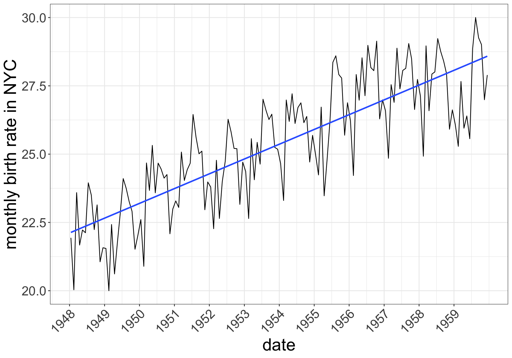
In time series data, sequential observations in time are likely to either be highly positively or negatively correlated. In this case, we can see clear seasonal fluctutation in birth rates.
Repeated observations
When observations are drawn repeatedly from a sample of some larger units (i.e. a multilevel structure), then observations within the same unit are likely to vary from predicted values in the same way. For example, students in the same classroom might tend to have either lower or higher test scores than predicted by the model due to some unobserved feature of that classroom.
Serial autocorrelation example
model <-lm(births~month, data=births_nyc)augment(model) |>ggplot(aes(x = .resid, y =lag(.resid, 1)))+geom_point()+geom_smooth(method="lm", se=FALSE)+geom_hline(yintercept =0, linetype=2)+labs(x="residuals",y="residuals (lagged one month")
As an example of serial autocorrelation, I will use the longley time series dataset in R to fit the following model predicting the number of people employed by GNP from 1947 to 1962 (n=16):
I can then plot the residuals values from years 1947 to 1961 by the residual values for years 1948 to 1962. The positive correlation in the residuals here suggests serial autocorrelation.
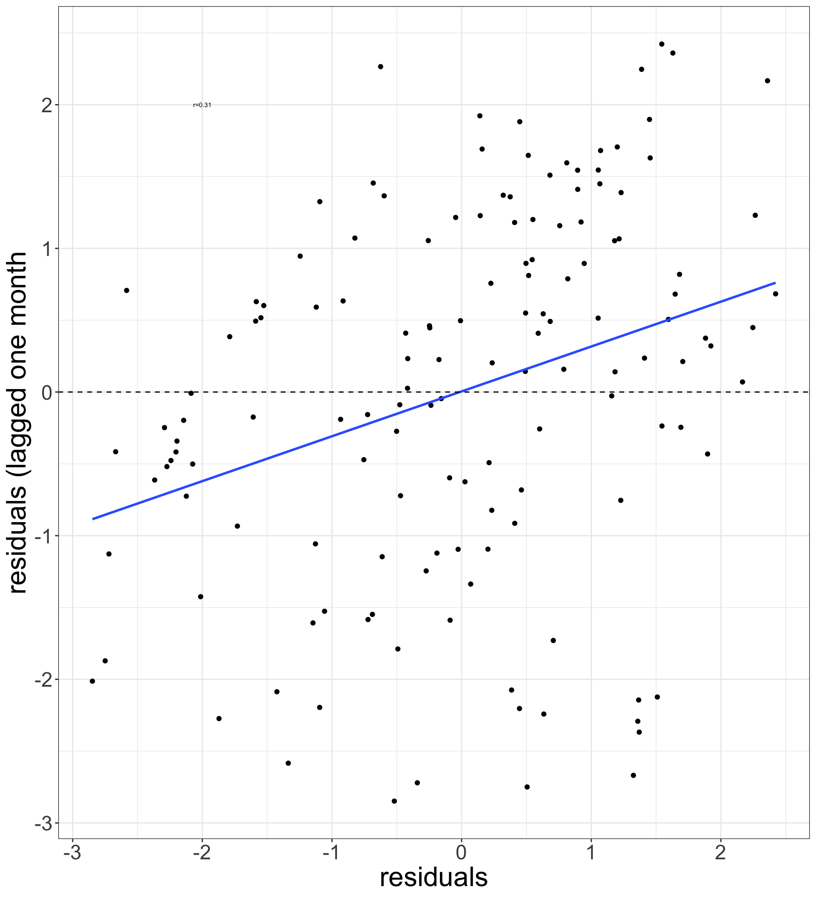
Heteroscedasticity
Heteroscedasticity means that the variance of the residuals is not constant but depends on the values of \(x_i\), and therefore, implicitly, \(\hat{y}_i\).
A classic example of heteroscedasticity is when the variance of the residuals increases with larger values of \(\hat{y}_i\) giving you a cone shape in a residual by fitted value plot.
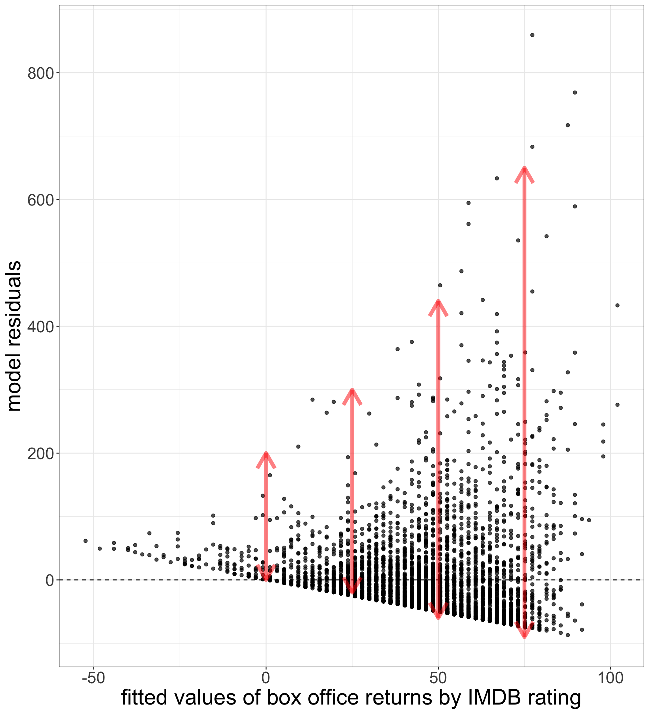
Figure 10: The variance of the residuals increases with the predicted value
Correcting for iid violations
Violating the iid assumption does not bias your results, but it will lead to inefficient estimates and poorly estimated standard errors.
There are a number of potential solutions to the iid problem. These include:
Transformations (particularly the log transformation) can often solve the problem of heteroscedasticity.
Weighted least squares models can correct for iid when the nature of the violation is understood.
Robust standard errors can be used as a crude brute-force solution when the nature of the violation is not well understood. I would recommend that this only be done for diagnostic reasons.
In general, the best approach is to re-think your model. If you have an iid violation then you are probably not applying the best type of model to the problem at hand.
Fixing heteroscedasticity with a transformation
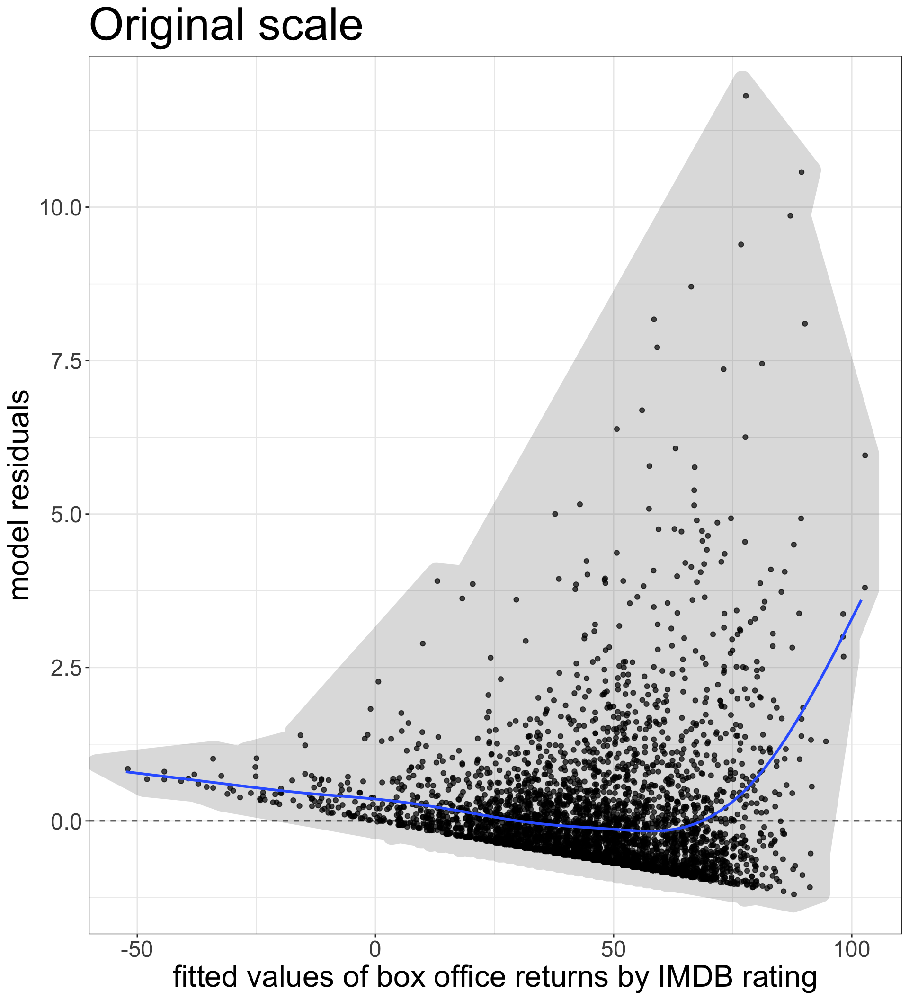
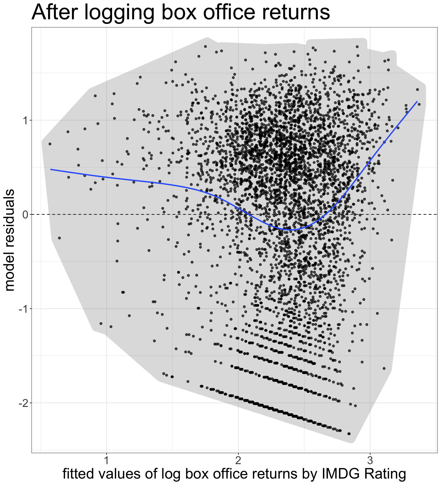
Using Weighted Least Squares
The weighted least squares technique uses a weighting matrix \(\mathbf{W}\) in its calculation of regression slopes like so:
The exact form of this weighting matrix depends on the nature of the iid violation, but in general it is used to represent the covariance between residuals.
Values in the diagonal cells adjust for heteroscedasticity.
Values in other cells adjust for autocorrelation.
GLS Example
We can use the gls command in the nmle package to adjust for serial autocorrelation in the prior model.We will assume that the autocorrelation follows an “AR2” pattern in which each subsequent residual is correlated with its two immediate predecessors (AR2 stands for auto-regressive 2, where 2 indicates the lag).
We won’t delve into the math behind the robust standard error, but the general idea is that robust standard errors will give you “correct” standard errors even when the model is mis-specified due to issues such a non-linearity, heteroscedasticity, and autocorrelation.
Robust standard errors can be estimated in R using the sandwich and lmtest packages, and specifically with the coeftest command. Within this command, it is possible to specify different types of robust standard errors, but we will use the “HC1” version which is equivalent to the robust standard errors produced in Stata by default.
library(sandwich)library(lmtest)model <-lm(box_office~rating_imdb, data = movies)summary(model)$coef[,1:2]
The estimates are the same, but the robust standard errors are considerably larger. That difference in magnitude is telling us that our basic regression model is problematic. In this case, we already know that the problem is heteroscedasticity.
⚠️ Robust standard errors diagnose problems that they do not fix!
Lets use robust standard errors on a model where we first log box office returns:
model <-lm(log(box_office)~rating_imdb, data = movies)summary(model)$coef
Estimate Std. Error t value Pr(>|t|)
(Intercept) 0.01557736 0.22438136 0.06942361 9.446556e-01
rating_imdb 0.37140161 0.03539619 10.49270036 1.877324e-25
coeftest(model, vcov =vcovHC(model, "HC1"))
t test of coefficients:
Estimate Std. Error t value Pr(>|t|)
(Intercept) 0.015577 0.203624 0.0765 0.939
rating_imdb 0.371402 0.031974 11.6158 <2e-16 ***
---
Signif. codes: 0 '***' 0.001 '**' 0.01 '*' 0.05 '.' 0.1 ' ' 1
When the dependent variable is logged to remove heteroscedasticity, the difference between robust and regular standard errors goes away.
Sample Design and Weighting
The reality of survey sampling
The simple random sample
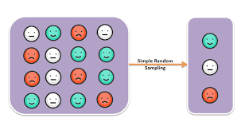
In a simple random sample (SRS) of size \(n\), every possible combination of \(n\) observations from the population has an equally likely chance of being drawn.
Eevery statistic from an SRS should be representative of the population, except for random sampling bias.
Reality
In practice, large-scale surveys never use SRS for pragmatic and design reasons.
For correct statistical inference, we typically need to make adjustments for sample design.
The primary ways in which sample design affects estimation are clustering, stratification, and weighting.
Cluster/Multistage sampling
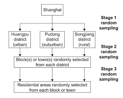
Potential observations are aggregated into larger groupings identified as the Primary Sampling Unit (PSU) and then we sample some of these PSUs before sampling individual observations within the sampled PSUs.
Cluster sampling is about efficiency and cost. Clusters are typically defined geographically, which then minimizes the cost of sampling individual observations.
If PSUs are sampled with probabilities proportional to cluster size, then every unit in the population has an equal likelihood of being selected. In this case, summary statistics on the sample should be representative.
When the variable of interest is distributed differently across clusters, the sampling variability will be higher than an SRS even if every observation has an equally likely chance of being drawn.
What percent of the US population is Mormon?
The General Social Survey uses Metropolitan Statistical Areas (MSA) and clusters of non-metropolitan counties as the PSU. In each year, it draws a sample of these areas and then samples respondents within each sampled PSU.
Because Mormons are heavily concentrated in certain places, percent Mormon in the GSS varies substantially from year to year by whether certain PSUs were sampled or not. Red band indicates expected 95% interval for sampling variability without clustering, assuming the average percent across all years (dotted line).
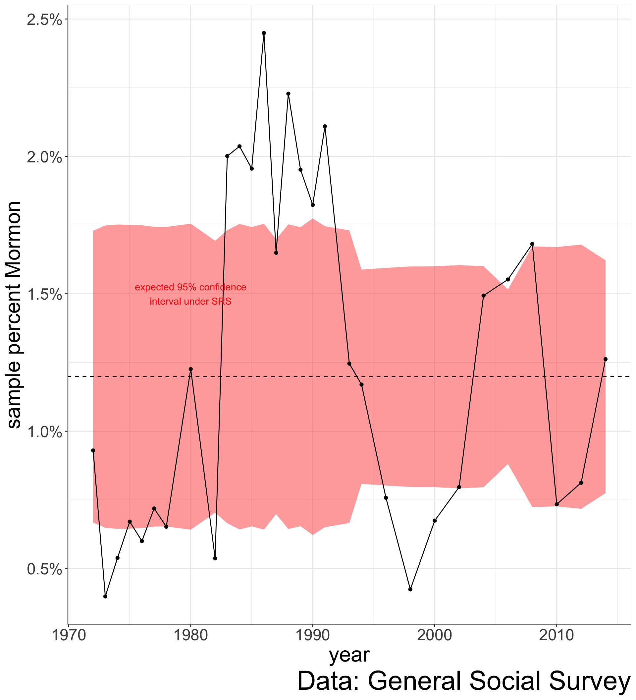
Figure 11: The variance in the proportion across years is higher than we would expect if we were drawing an SRS
Stratification
Stratification in sampling operates in a manner somewhat similar to cluster sampling except that once the observations are aggregated into strata by some characteristic (e.g. income, race, age), observations are sampled from every stratum.
Stratification is typically done to ensure that various sub-populations are present within the sample.
Different strata may be sampled with different probabilities. The most common approach is to take an oversample of a small group in order to ensure that effective comparisons can be made between that group and other groups.
In practice, stratification is often done by first screening potential respondents for stratum characteristics.
If strata are sampled with different probabilities, then summary statistics for the full sample will not be representative without weight adjustments.
Unlike clustering, greater similarity on a characteristic of interest within strata can actually reduce the sampling variability for that characteristic relative to an SRS.
Weighting
Numerous factors can lead to a sample being unrepresentative such as sampling strata with different probabilities, differential non-response rates, and a lack of fit between sample frame and population.
Sampling weights allow researchers to correct summary statistics from the sample so that they are representative of the population.
The sampling weight for an observation should be \(1/p_i\) where \(p_i\) is the probability of being sampled. The sampling weight indicates the number of observations in the population that observation \(i\) in the sample represents.
Calculating sampling weights can be quite complex. In some cases, researchers may know \(p_i\) from the study design. In other cases, researchers may create post-stratification weights by comparing the sample to some other data source (e.g. census, school records) for a set of demographic characteristics and applying weights to make the sample align with the other data source.
When sampling weights are present in a dataset, they must be used to generate statistics representative of the population.
Variation in sampling weights will increase sampling variability above and beyond that expected for an SRS.
Weights in Sneetchville
sneetches
In Sneetchville, there are 3 star-bellied and 7 regular sneetches. Lets say I take a stratified sample of two star-bellied and two regular sneetches. Here is the population data:
Yes, if PSUs are proportionally drawn. Otherwise, weighting necessary.
Increases with difference between clusters.
Stratification
Yes, if strata are sampled with same probability. Otherwise weighting necessary.
Decreases with homogeneity within strata
Weights
Only if weights are applied.
Increases with the variance of the weights.
Correcting for survey design
Basic Weighting
R has syntax in many commands to apply sampling weights to get representative statistics (e.g. weighted.mean, the weight option in the lm command), but this approach will not correctly adjust standard errors for design effects.
Robust standard errors
Robust standard errors will correct standard errors for differential weights, but not for clustering and stratification design effects.
Survey package
The survey package in R will allow you to specify design and correctly adjust standard errors.
Add Health survey design
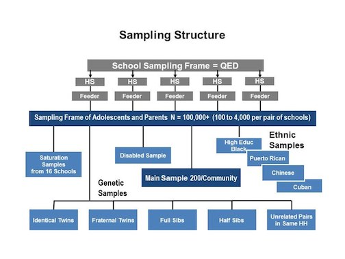
Schools were the primary PSU in a cluster sampling technique, but were also stratified by region, urbanicity, school type, ethnic mix, and size.
Students within schools were stratified by grade and sex and then sampled.
Several oversamples were conducted of ethnic groups and genetically related pairs of students, as well as saturated samples from 16 schools.
Post-stratification adjustments were made to sampling weights to account for region of the country.
The Add Health documentation indicates that the REGION variable should be applied as a stratification variable but this variable is not available in the public release data so we will focus on the design effects of weights and clustering.
t test of coefficients:
Estimate Std. Error t value Pr(>|t|)
(Intercept) 4.026879 0.080106 50.2692 < 2.2e-16 ***
nsports 0.533007 0.063041 8.4549 < 2.2e-16 ***
---
Signif. codes: 0 '***' 0.001 '**' 0.01 '*' 0.05 '.' 0.1 ' ' 1
Estimates are identical to the weighted lm but standard errors are slightly larger. However, this technique still does not correct for clustering.
Add Health example, using survey library
I can use the svydesign command in the survey package to correctly specify both the weights and the clustering in Add Health. The ids argument expects a variable name that identifies the clusters by id (in this case, the school id) and the weight argument expects a variable name for the weights used.
Estimate Std. Error t value Pr(>|t|)
(Intercept) 4.0268786 0.11483268 35.067357 6.996643e-62
nsports 0.5330072 0.07318866 7.282648 5.034252e-11
Estimates are identical to the weighted model before, but standard errors have increased due to variation in weights and the cluster design effect.
Comparison of methods
Table 2: Comparison of modeling techniques for dealing with sampling design
unweighted OLS
weighted OLS
robust SE
svy: weights
svy: weights+cluster
Intercept
3.997***
4.027***
4.027***
4.027***
4.027***
(0.072)
(0.073)
(0.080)
(0.080)
(0.115)
Number of sports played
0.504***
0.533***
0.533***
0.533***
0.533***
(0.043)
(0.043)
(0.063)
(0.063)
(0.073)
Num.Obs.
4397
4397
4397
4397
4397
R2
0.031
0.033
0.033
0.033
+ p < 0.1, * p < 0.05, ** p < 0.01, *** p < 0.001
All models except the unweighted version produce the same estimates of slope and intercept based on the weights.
The survey weighted and robust SE models both produce the same standard errors. This is because both models account for the design effect of weight variance but not clustering.
Missing Data
The reality of missing data
Missing data exists in most real-world data sets. Therefore, its important to know how to handle missing data in order to know how to properly conduct an analysis.
Valid Skip
Valid skips most arise when a follow-up question is only asked of respondents who gave a certain response to the initial question. If you construct a variable correctly, valid skips should not be considered missing values.
Item non-response
Item non-response occurs when respondents fail to respond to a specific question. This may be because they don’t know the correct response or they do not feel comfortable answering the question.
Example of a valid skip
The General Social Survey uses three variables to determine respondents’ religious affiliation.
relig asks for major religious affiliations such as Catholic, Protestant, Jewish, Muslim, etc.
If and only if respondents indicate they are Protestant, they are asked a follow up question recorded in denom which asks for their specific denomination.
denom only lists major Protestant denominations. If the respondent checks “other”, their specific write-in response is recorded in a third variable titled other.
relig |>select(relig, denom, other) |>summary()
relig denom other
protestant:34597 other : 7491 pentecostal : 878
catholic :14532 baptist-dk which: 6078 mormon : 714
none : 6635 southern baptist: 3613 church of christ : 648
jewish : 1195 no denomination : 3101 christian : 538
other : 1025 united methodist: 2693 jehovah's witnesses: 397
(Other) : 1592 (Other) :11959 (Other) : 4224
NA's : 23 NA's :24664 NA's :52200
There are a lot of missing values for denom and other, but these are all valid skips based on prior responses. The only true missing values in this set of variables are the 23 respondents who did not respond to the initial question on relig.
Kinds of missingness
Missing Completely at Random (MCAR)
Every observation has the same probability of missingness and the missingness of a variable has no relationship to other observed or unobserved variables. If this is true, then removing observations with missing values will not bias results.
Missing at Random (MAR)
The different probabilities of missingness can be fully accounted for by other observed variables in the dataset. If this is true, then various techniques can be used to produce unbiased results by imputing values for the missing values.
Not Missing at Random (NMAR)
The different probabilities of missingness depend both on observed and unobserved variables. In this case, we cannot fully correct for bias that might result from missing data.
Add Health income example
As an example, I will use parental income from the Add Health data to predict popularity. Income is recorded in thousands of dollars, and I have top-coded the values to $200,000. Income is notorious as a variable that will typically have a high non-response rate. The Add Health data are no different:
summary(addhealth$parent_income)
Min. 1st Qu. Median Mean 3rd Qu. Max. NA's
0.00 23.00 40.00 45.37 60.00 200.00 1027
mean(is.na(addhealth$parent_income))
[1] 0.2335683
Income is missing for 1027 cases which is roughly a quarter of the dataset.
Two basic approaches to missing values
Remove cases
Case deletion is easy to implement.
Case deletion assumes MCAR.
Case deletion may result in a substantial reduction is sample size.
Impute cases
Imputation is more difficult to implement.
If done properly, imputation assumes MAR.
Imputation will not reduce sample size.
Two kinds of case deletion
Complete-case analysis (listwise deletion)
All cases that have missing values on any of the variables that will be used at some point in the analysis are removed from the start.
This ensures that all results are based on the same sample.
Available-case analysis (pairwise deletion)
Cases are removed model by model or statistic by statistic when the variables used in that particular statistic or model have missing values.
This is by default what will happen in R across different lm models with different variables.
This approach allows the researcher to use more data, but different statistics and models will use different subsets of the full data which makes comparability problematic.
Removing cases, Add Health example
Available-case analysis
This is what happens by default when you just run nested models in R
model1.avail <-lm(nominations~nsports, data = addhealth)model2.avail <-update(model1.avail, .~.+alcohol_use+smoker)model3.avail <-update(model2.avail, .~.+parent_income)
Complete-case analysis
To do this, we need to use drop_na on the Add Health variables that will be in the most complex model to make sure all models work with the same subset.
Table 3: Models predicting number of friend nominations, available cases
(1)
(2)
(3)
Intercept
3.997***
3.851***
3.391***
(0.072)
(0.079)
(0.120)
Number of sports
0.504***
0.508***
0.454***
(0.043)
(0.043)
(0.049)
Drinker
0.707***
0.663***
(0.155)
(0.180)
Smoker
0.194
0.383*
(0.162)
(0.188)
Parental income (1000s USD)
0.012***
(0.002)
Num.Obs.
4397
4343
3332
R2
0.031
0.037
0.048
+ p < 0.1, * p < 0.05, ** p < 0.01, *** p < 0.001
Table 4: Models predicting number of friend nominations, complete cases
(1)
(2)
(3)
Intercept
4.051***
3.876***
3.391***
(0.085)
(0.091)
(0.120)
Number of sports
0.490***
0.494***
0.454***
(0.049)
(0.049)
(0.049)
Drinker
0.717***
0.663***
(0.181)
(0.180)
Smoker
0.372*
0.383*
(0.189)
(0.188)
Parental income (1000s USD)
0.012***
(0.002)
Num.Obs.
3332
3332
3332
R2
0.029
0.037
0.048
+ p < 0.1, * p < 0.05, ** p < 0.01, *** p < 0.001
Imputation
Predictive or non-Predictive?
Imputations vary by whether or not they use other predictors in the data to assign imputed values to missing values.
Predictive imputation is done via a statistical model.
Predictive imputation moves the assumption from MAR to MCAR if the model is good.
Non-predictive imputation will systematically bias correlation between variables downward.
Inject Randomness?
Imputations vary by whether or not they include a random component or are purely deterministic.
Deterministic imputation techniques will underestimate variance in the imputed variable and will therefore underestimate standard errors.
The use of randomization leads to another source of variation called imputation variation which can only be fully addressed through the technique of multiple imputation.
Non-Predictive Imputation
A very simple (and poor) technique would be just to substitute the mean for valid responses for all missing values.
Both techniques will systematically underestimate correlation.
Mean imputation will underestimate the variance of the imputed variable.
Quick and dirty method
If I do a mean imputation, I can also add a boolean variable for missingness as a predictor in my model. The effect of the imputed variable will be the same as if if I had thrown out missing values (because we are controlling for missingness), but I get to use the full data.
Table 5: Models predicting friend nominations
Drop missing
Missing dummy
Intercept
3.931***
3.931***
(0.107)
(0.106)
Parental income (1000s USD)
0.015***
0.015***
(0.002)
(0.002)
Parent income imputed
-0.187
(0.131)
Num.Obs.
3370
4397
R2
0.017
0.014
+ p < 0.1, * p < 0.05, ** p < 0.01, *** p < 0.001
This model still assumes MCAR and reduces variance in the independent variable.
Its primary advantage is that it is a quick method to avoid having to throw out cases that have valid data on other important variables.
Regression imputation
I will predict the value of parental income by other independent variables (but never the dependent variable) using a linear model.
In this case, I will transform parental income by the square root as well since it is heavily right skewed.
model <-lm(sqrt(parent_income)~race+pseudo_gpa+ honor_society+alcohol_use+smoker+ bandchoir+nsports, data=addhealth)
Then, I use the predict command to get predicted values for all observations and impute the predicted values (or their square, technically) for missing values.
Min. 1st Qu. Median Mean 3rd Qu. Max. NA's
0.00 25.00 39.05 44.05 55.00 200.00 259
I still have some missing values, because there were missing values on the variables I used to predict parental income.
Random regression imputation
The previous model is deterministic, and will underestimate variance in parental income but I can add a random component to this by sampling from a normal distribution with a mean of zero and standard deviation equal to that of the model residuals.
As you saw above, predictive imputation still leads to some missing values if the variables used for prediction also contain missing values. We can get around this via an iterative procedure called chained equations:
All missing values are given some placeholder value. This might be the mean value, for example.
For one variable, the placeholder values are removed and missing values put back in. These missing values are then predicted and imputed by some model for this variable.
Step 2 is repeated for all variables with missing values. When all variables have been imputed, we have completed one iteration.
Steps 2-3 are then repeated again for some number of iterations. The number of iterations necessary may vary by data, but five iterations is typical.
Using mice to impute a single dataset
The mice command will use chained equations to impute missing values on all variables when a dataset is fed in. I can then use the complete command to extract a full dataset with no missing values.
Table 6: Models predicting friend nominations with different methods for missing values
deletion
mean
mean + dummy
random
regression
random regression
chained equations
Intercept
3.391***
3.360***
3.399***
3.465***
3.367***
3.403***
3.341***
(0.120)
(0.111)
(0.115)
(0.105)
(0.110)
(0.108)
(0.103)
Number of sports
0.454***
0.476***
0.474***
0.483***
0.461***
0.464***
0.463***
(0.049)
(0.043)
(0.043)
(0.043)
(0.045)
(0.045)
(0.043)
Drinker
0.663***
0.666***
0.668***
0.666***
0.647***
0.654***
0.614***
(0.180)
(0.155)
(0.155)
(0.155)
(0.163)
(0.163)
(0.153)
Smoker
0.383*
0.201
0.203
0.202
0.257
0.257
0.221
(0.188)
(0.161)
(0.161)
(0.161)
(0.170)
(0.170)
(0.159)
Parental income (1000s USD)
0.012***
0.012***
0.012***
0.009***
0.013***
0.012***
0.013***
(0.002)
(0.002)
(0.002)
(0.002)
(0.002)
(0.002)
(0.002)
Parent income imputed
-0.162
(0.130)
Num.Obs.
3332
4343
4343
4343
4100
4100
4397
R2
0.048
0.046
0.046
0.044
0.048
0.047
0.049
+ p < 0.1, * p < 0.05, ** p < 0.01, *** p < 0.001
Imputation variability
The methods of random imputation have the benefit of preserving the standard deviation of the imputed variable and therefore calculating correct standard errors, but they also introduce a new source of uncertainty.
Each time I do an imputation with a random component (e.g. random regression, chained equation), I will get a somewhat different set of values.
Therefore, we now have imputation variability to add to our inferential concerns alongside sampling variability.
We can use multiple imputation to adjust our results for imputation variability.
Multiple imputation process
Use imputation process with random component to impute missing values and repeat this process to produce \(m\) separate complete datasets. Each of these datasets will be somewhat different due to the randomization of imputation. Usually \(m=5\) is sufficient.
Run \(m\) separate parallel models on each imputed complete dataset. As a result, you will have \(m\) sets of regression coefficients and standard errors.
Pool the regression coefficients across datasets by taking the mean across all \(m\) datasets.
Pool standard errors by taking the mean across all \(m\) datasets plus the between model standard deviation in coefficients. The formula for the overall standard error is:
\[SE_{\beta}=\sqrt{W+(B+\frac{B}{m})}\] Where \(W\) is the squared mean standard error across all \(m\) datasets, and \(B\) is the variance in coefficient estimates calculated across all \(m\) models.
Multiple imputation with the mice package
To get multiple complete datasets with mice we just need to specify the number of distinct complete datasets to create in the second argument:
imputations <-mice(addhealth, 5, printFlag=FALSE)
The imputations object now contains five fully complete imputed datasets. Its possible to extract any one of these datasets with the command complete(imputations, i) where i is replaced by a number between 1 and 5.
We can now conduct our parallel analysis on these five datasets and combine results. There is an easy and a hard way to do this. Its useful to know both.
Easy way: let mice do the hard work
The mice package has a lot of nice features, including an object specific function for the with command and a pool command that make multiple imputation as easy as falling off a log:
The hard way isn’t really that hard. It is useful to know for cases where the easy way won’t work, such as when you need to run complicated models (using svydesign would be an example).
b <- se <-NULLfor(i in1:5) { imputation <-complete(imputations, i) model <-lm(nominations~parent_income+smoker+alcohol_use+nsports, data=imputation) b <-cbind(b, coef(model)) se <-cbind(se, summary(model)$coef[,2])}b
Given that adding more independent variables to your model allows you to account for potential omitted variable bias, why wouldn’t you just put in as many variables as you can?
Because of multicollinearity. Multicollinearity occurs when there is collectively a high correlation between the independent variables in the model.
Intuitively, its easy to understand why multicollinearity is a problem. When two independent variables are highly correlated with one another, it becomes hard to separate out their effect on the dependent variable.
Technically, the effect of multicollinearity is to inflate standard errors and make coefficient estimates highly unstable across different combinations of highly collinear terms in the model.
Two kinds of multicollinearity
Structural multicollinearity
Structural multicollinearity occurs when one independent variable is completely determined by another independent variable or set of independent variables. This really isn’t an issue with the data, but rather a specification error by the researcher.
Data-based multicollinearity
Data-based multicollinearity occurs when a set of variables are highly but not perfectly correlated with one another in the empirical data. It is a hazard of using observational data where the characteristics for which you want to get separate effects are difficult to separate.
Example of structural multicollinearity
Lets predict violent crime by percent female and percent male.
crimes$percent_female <-100-crimes$percent_malesummary(lm(violent_rate~percent_male+percent_female, data = crimes))
Call:
lm(formula = violent_rate ~ percent_male + percent_female, data = crimes)
Residuals:
Min 1Q Median 3Q Max
-275.24 -104.25 -40.38 61.07 695.41
Coefficients: (1 not defined because of singularities)
Estimate Std. Error t value Pr(>|t|)
(Intercept) 2067.27 1482.04 1.395 0.169
percent_male -34.11 30.00 -1.137 0.261
percent_female NA NA NA NA
Residual standard error: 177.2 on 49 degrees of freedom
Multiple R-squared: 0.0257, Adjusted R-squared: 0.005817
F-statistic: 1.293 on 1 and 49 DF, p-value: 0.2611
Singularity! Not as cool as it sounds.
One of the terms was dropped from the model because the terms are perfectly collinear.
cor(crimes$percent_female, crimes$percent_male)
[1] -1
This is not a problem of the model, but our thinking. Either term by itself will give you full information.
coef(lm(violent_rate~percent_male, data = crimes))
(Intercept) percent_male
2067.26563 -34.10628
coef(lm(violent_rate~percent_female, data = crimes))
(Intercept) percent_female
-1343.36192 34.10628
Detecting data-based multicollinearity
Look for weirdness across nested models:
Standard errors increase substantially across nested models with more covariates
Model coefficients are highly unstable across nested models
Examine the correlation matrix for high correlations
Calculate variance inflation factors
Multicollinearity example: NYC non-profits
We will look at data collected by myself and Nicole Marwell on the spatial distribution of money contracted out to organization for social services by the City of New York from 1997-2001. The unit of analysis is a NYC health area, which can loosely be thought of as a neighborhood. The variables are:
amountcapita: The dollar amount of money provided to the health area divided by the population size of the health area. We will log it due to skewness.
poverty: percent of population below the poverty line.
unemployed: unemployment rate.
income: median household income. We will log it due to skewness.
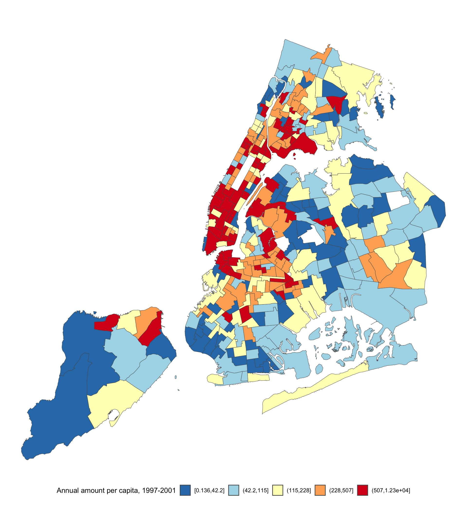
Figure 13: Per capita services contracted out in NYC by health area, 1997-2001
Model results, NYC example
Table 7: Linear models predicting per-capita social service spending (logged)
The correlation between the three variables is very high, suggesting strong multicollinearity.
Note that, while the correlation matrix is often helpful, it may not reveal the full extent of multicollinearity because it only looks at bivariate relationships between the variables.
You can also visualize the correlation matrix as a correlogram.
The variance inflation factor (VIF) is the multiplicative factor by which the variance in the estimation of any one coefficient from the current model is increased due to multicollinearity relative to a model in which the variables are uncorrelated. The square root of the VIF is roughly the expected factor increase in the standard error. It can be shown that the VIF for the \(i\)th variable is given by:
\[VIF_i=\frac{1}{1-R_i^2}\]
Where \(R_i^2\) is the r-squared value when the given independent variable is predicted by all of the other independent variables in the model. For example, we could calculate the VIF for poverty in the full model by:
1/(1-summary(lm(poverty~unemployed+lincome, data = nyc))$r.squared)
[1] 5.984485
The square root of this VIF is 2.45, indicating that the standard error for poverty is more than doubled due to multicollinearity in the full model.
Estimating VIF with the vif command
We can also use the vif function in the car package to quickly estimate all VIFs for a given model:
library(car)model <-lm(log(amtcapita)~poverty+unemployed+lincome, data = nyc)vif(model)
The general rule of thumb is that a VIF over four is problematic enough that it needs to be addressed in some manner. Clearly, multicollinearity is a big problem here.
You have multicollinearity, now what?
Remove variables
A simple approach is to remove some of the highly correlated covariates. However, because the variables are not perfectly correlated, you are basically throwing out some information.
Separate models
Another approach is to run separate models with only one of the highly collinear variables in each model. This can also be unsatisfying because each of the models is underestimating the total effect of the variables collectively.
Create a scale
In cases where the collinear variables are all thought to represent the same underlying conceptual variable, we can combine them into a single synthetic scale.
Standardization and reverse ordering
In many cases, the variables that are thought to make up a scale might be measured in the same manner.
When variables are measured differently (as in our example), then they must be standardized in some way to make them comparable before scale construction and evaluation. The most common way to do this is by creating z-scores by subtracting by the mean and dividing by the standard deviation of each variable.
Some variables may be positively related to the underlying concept while others may be negatively related. It may be necessary to reverse the coding of a variable to make all variables positively related to the underlying concept.
Lets write a quick function to standarize numeric variables:
Note that I am multiplying the lincome result by -1 to reverse code it.
Warning
You can also use the built in base R scale command to do this, but it annoyingly saves the result as something other than a vector, making it a pain to use.
Cronbach’s alpha
Cronbach’s \(\alpha\) is a statistic developed in psychology to test the degree to which different variables measure the same underlying concept.
Cronbach’s \(\alpha\) is often thought of as a test of the internal reliability of a scale.
You can think about Cronbach’s \(\alpha\) as a summary measure of the correlation matrix we saw earlier. It goes from 0 to 1, with 0 indicating no shared correlation, and 1 indicating perfect correlation between all items.
The pysch package includes and alpha command that will calculate \(\alpha\).
raw_alpha std.alpha G6(smc) average_r S/N ase mean
0.9159293 0.9159293 0.9013009 0.784091 10.89474 0.008313234 -1.373942e-16
sd median_r
0.9252355 0.7419472
The \(\alpha\) of 0.916 indicates a very high level of shared covariance between the three variables.
Summated scale
Once I have standardized and (if necessary) reverse coded all of the variables for my scale, I can create a simple summated scale by adding them up. I am also going to re-standarzie this variable after summation so that it has a mean of zero and a standard deviation of one.
A one standard deviation increase on my deprivation scale is associated with a 45% increase in the amount for social services in a neighborhood.
Factor analysis
Another approach to creating a scale is factor analysis. Factor analysis is a method to extract the underlying latent variables (the factors) from a set of observed variables. We will start with an example where we assume a single underlying latent factor.
Lets say we have three variables \(z_1\), \(z_2\), and \(z_3\) all measured as z-scores. We can construct a system of equations that relate each of these variables to a common shared factor \(F\) (also on a standard scale with a mean of 0 and SD of 1) and three unique factors, \(Q_1\), \(Q_2\), and \(Q_3\).
The \(F_i\) are called the factor scores and are the values of the common factor for each observation. The \(b\) values are called the factor loadings and give the correlation between each observed variable and the common factor. The unique factor components are not actually estimated in factor analysis but serve as the “residual” components.
Estimation in factor analysis
The factor scores and factor loadings for a factor analysis can be estimated by mathematical manipulation of the observed correlation matrix between variables, but we won’t get into the mathematical details here.
The factanal command in base R will estimate a factor analysis by maximum likelihood estimation (a technique we will learn in the next module).
The fa command in the psych package will also estimate factor analysis using a variety of techniques. It also has some nice additional tools that will make it more useful.
The second argument specifies that we want only one common factor.
We also need to specify a technique of rotation for the factor loadings because there are an infinite number of possible ways to express them. The oblimin method is a standard approach that helps to maximize differences between factors without forcing them to be uncorrelated.
Factor loadings
Extract loadings
loadings(factor_nyc)
Loadings:
MR1
poverty 0.926
unemployed 0.754
lincome -0.984
MR1
SS loadings 2.396
Proportion Var 0.799
The bottom part shows that 79.9% of the variation in the three variables is accounted for by the common factor.
The loadings themselves show the correlation coefficient between each observed variable and the common factor.
Visualize factor loadings
fa.diagram(factor_nyc)
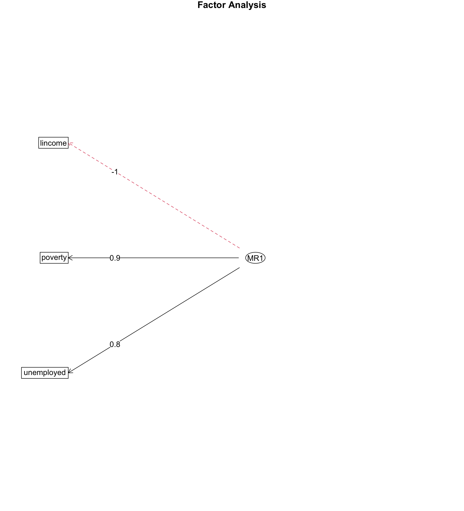
Figure 14: Visual display of factor loadings
Factor Scores
I can easily extract my factor scores from the the factor analysis object and use them as my scale measure of deprivation.
A one standard deviation increase on my deprivation scale is associated with a 33% increase in the amount for social services in a neighborhood.
Whats the difference?
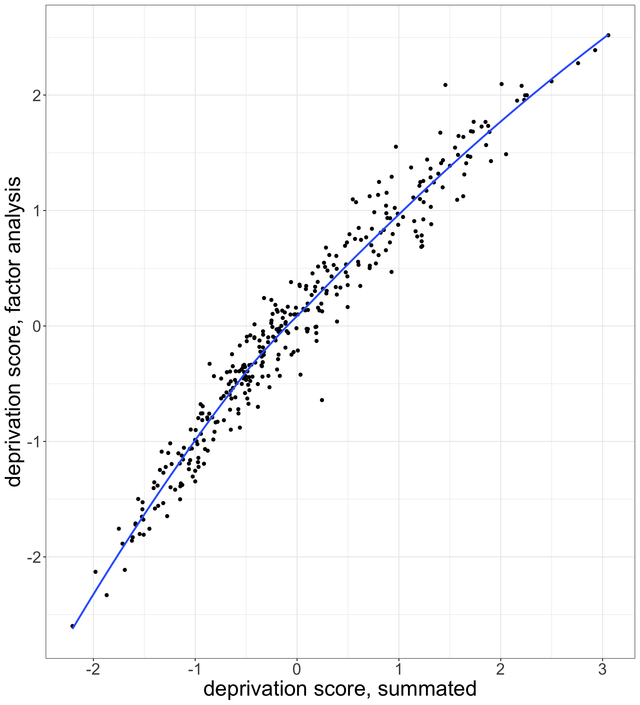
Figure 15: comparison of the summated scale vs. factor score
The summated scale uses all the variation in the three variables to generate the score.
The factor analysis only uses the shared component to generate the score. The unique component is left out.
A closely related technique to factor analysis called principal component analysis uses all of the variation in the items and will produce results virtually identical to the summated score.
Factor analysis with multiple factors
The previous example only used one factor and produced results that were very similar to a simple summated scale. However, it is also possible to use factor analysis to identify more than one common factor shared among a set of variables.
The formulas for factor analysis above can be generalized to a set of \(J\) observed variables and \(m\) factors by a set of \(J\) equations. For the \(j\)th observed variable:
There will be a set of \(J\) factor loadings for each of the \(m\) factors. The key question with this technique is what are the appropriate number of factors? This is typically determined by an analysis of:
how much total variation is explained by a given number of factors.
whether the factor loadings for a given number of factors make theoretical sense.
Example: social conservatism among Muslims
Between 2008-12, The Pew Research Center surveyed Muslims from numerous countries around the world and (in addition to other questions) asked respondents about the moral acceptability of these practices:
divorce
polygamy
fertility control
alcohol
euthanasia
suicide
abortion
prostitution
premarital sex
homosexuality
The data are coded as an ordinal response:
Morally acceptable
Depends/Not a moral issue
Morally wrong
I re-code the data on a numeric scale from 1 to 3.
Factor analysis only needs the correlation matrix between variables rather than the original data itself.
This is one case where available-case analysis makes sense. I can maximize the number of cases on each pairwise correlation coefficient to use all of the available data. The use="pairwise.complete.obs" argument in the cor function will use available-case analysis when it computes the correlation coefficient between each pair of variables.
Factor analysis is part of a larger family of methods that are often described as data reduction techniques: How can you reduce the amount of information in a given set of variables into a smaller set of variables?
Latent class analysis
An important cousin of factor analysis that can be used for categorical variables.
Structural equation modeling
The idea of factor analysis can be generalized to construct entire systems of equations that involve both latent and observed variables.